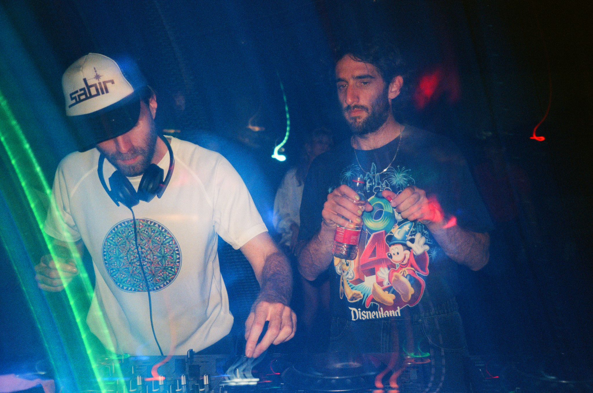
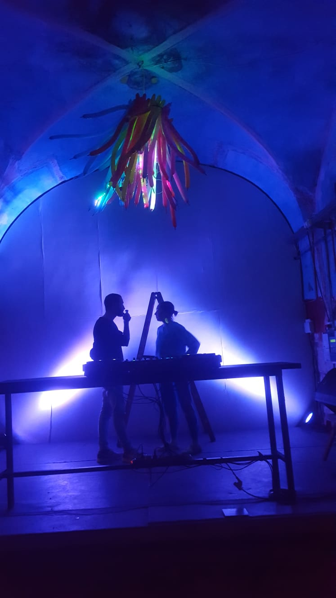
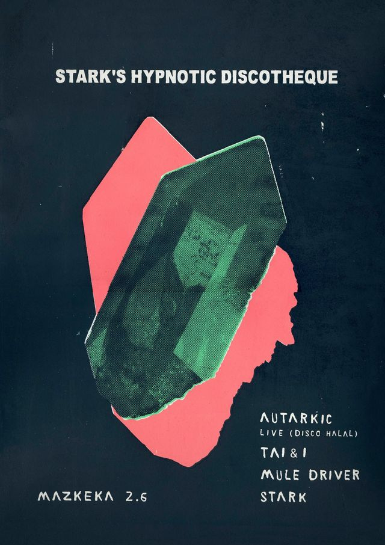
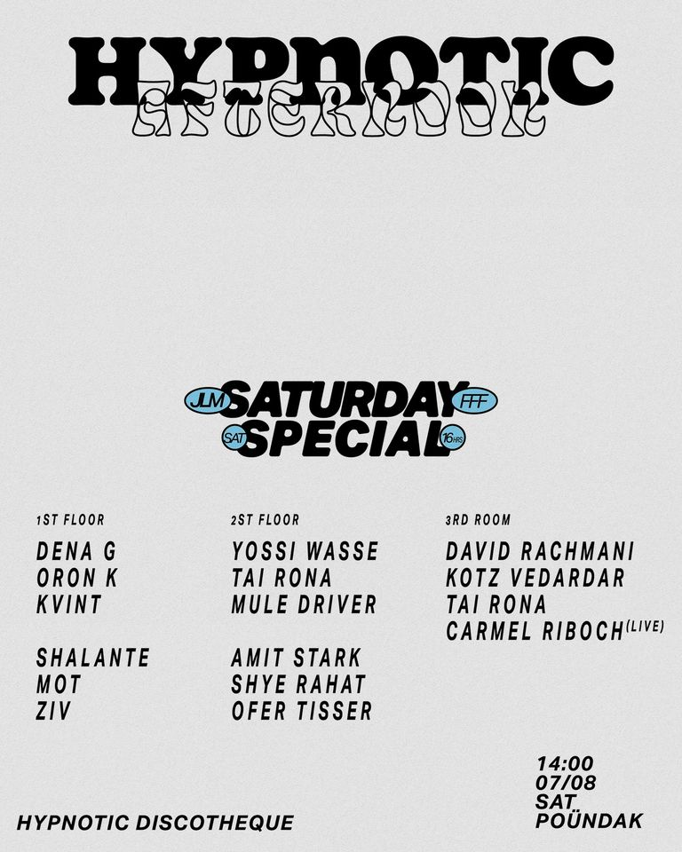
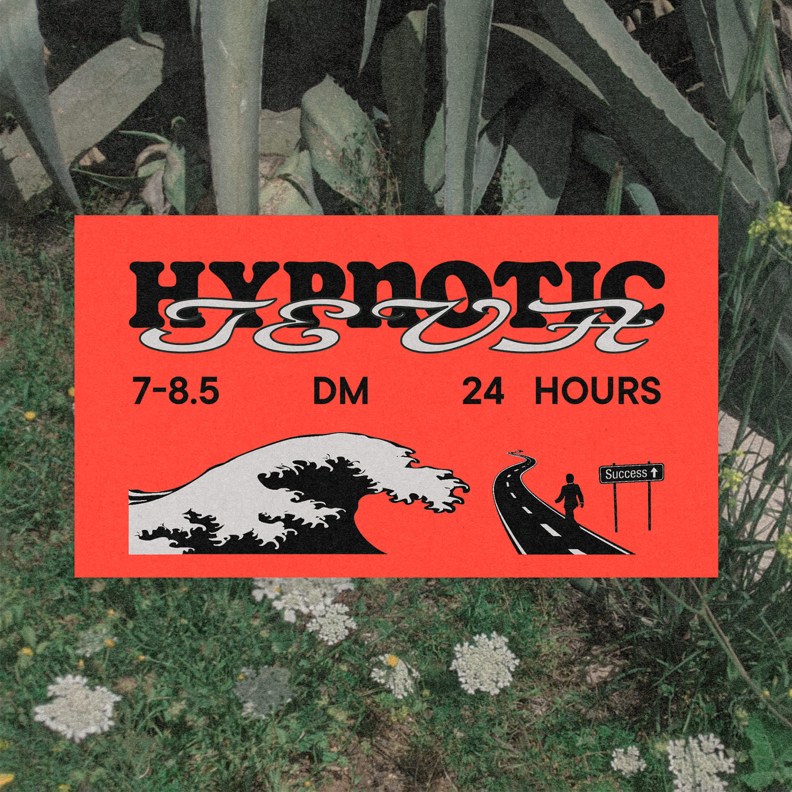
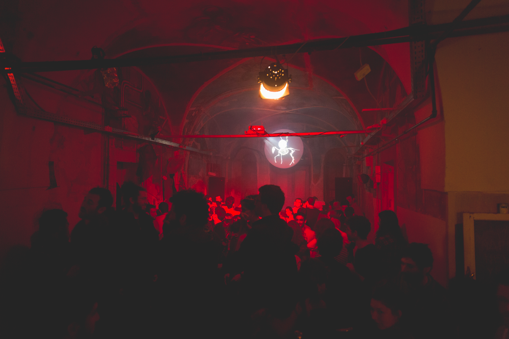

היפנוטיק
דיסקוטק
אדם/קבוצה
עמית סטארק, דיג'יי שהחל לתקלט ב־2009, עבר לירושלים ב־2013. הוא הכיר דרך חברים משותפים את האנשים שהיו חלק מקבוצת בית ריק והיו קשורים לפאב המחסן. כך תקלט במקומות שונים והמחסן ביניהם. תוך זמן קצר יצר קשרים עם אנשים בירושלים וארגן איתם מסיבות בתחילה בעין כרם, ובשנה אחר־כך במלון נטוש ברחוב קרן היסוד בקומת המסעדה. האווירה בירושלים הייתה של השתתפות בעשייה תרבותית (כולל תרבות מסיבות), קבלה ותמיכה ביוזמות שונות והרבה שיתוף פעולה.

עמית סטארק וערן קווינט. צילום: נופר כהן
מבחינה מוזיקלית היו המסיבות של גילי דה קיד – רעש Hour שהתרכזו סביב היפ הופ סטייל לוס אנג'לס (כמו ראס ג'י, פליינג לוטוס), ומארקי פאנק; הייתה סצנה סביב ארבע ועשרים – שהתרכזה בבייס מיוזיק (Bass music) – כמו דאבסטפ, היפ הופ, טראפ; סטודיו שטראוס עם המוזיקה הכבדה והאקספרימנטלית; מסיבות האוס וטכנו כמו תלתליסטים (כשהמארגנים עוד גרו בירושלים) והליין "בור" של שי לרנר ואוסקה.
באותה תקופה (2015) נפתחה המזקקה, ואנשיה רצו לפתוח ליין מסיבות של מוזיקת האוס וטכנו. עופר טיסר, שניהל את הבוקינג, הציע לו לתקלט בליין כזה משלו. כך נולד הליין (שנקרא בהתחלה Stark’s Hypnotic Discotheque) שהתרחש במזקקה מדי חודש וחצי. בהתחלה הוא תקלט בעצמו, ובהמשך בסביבות 2018, הצטרפו טיסר ודנה טקץ' כשותפים קבועים, כשטיסר מתקלט וטקץ' אחראית על ארט ותאורה. את הגרפיקה לפוסטרים ופרסום של האירועים עשה מההתחלה המעצב מיכאל כהן, אחד החברים של סטארק מירושלים. הם הזמינו דיג'יים אורחים שהתחילו להתגבש כקבוצה קבועה שכללה בין השאר את תאי רונה, פלר, ומיול דרייבר (הראל שרייבר, ממקימי אק דאק). ב־2019 הצטרפו לקבוצה ערן קווינט ושי רהט, קווינט וסטארק החלו לתקלט יחד כשמצאו התאמה סגנונית. יחד עם זאת המזקקה פחות התאימה להכיל את המסיבות שגדלו וקיבלו אופי משל עצמן, שפחות התאים למקום. כך הפיקו פעם ראשונה מחוץ למזקקה, בפונדק, וגם הזמינו לראשונה דיג'יי אורח מחו"ל. קווינט הפך שותף מלא ושווה לסטארק. לאחר מכן, עם תחילת תקופת הקורונה, הקבוצה הפכה לקולקטיב, עם מאגר של אנשים שיכולים לתרום דברים שונים כמו תקלוט, תאורה, הקמה וכו'. בקורונה התגבשה הצורה של המסיבות כיום, יותר רייבים בלוקיישנים משתנים, לפעמים בטבע, כשהמיקום נשמר בסוד, או במקומות כמו המפעל. כמו כן בתקופת הקורונה הוציאו שני אוספים מוזיקליים של קטעים שהדיג'יים השונים יצרו. לאחר התקופה הזאת נשאר האופי של הליין כרייב, מעין קרקס נודד כשיש צוות של תאורה, ומאז 2021 סאונדסיסטם משלו (מערכת הגברה ייעודית).

ממסיבת אפטר פורים במפעל. צילום: עמית סטארק

הפוסטר להיפנוטיק דיסקוטק הראשון, עיצוב: מיכאל כהן
תוך זמן קצר מתחילתו, אפיינו את ההיפנוטיק מספר דברים. בחיפוש אחרי משהו שלא היה קיים בירושלים ומתוך הסתכלות על תל אביב התברר במהרה שבירושלים אפשר לעשות דברים שאי אפשר בתל אביב ושהקהל פתוח אליהם יותר. למשל, תאי רונה נהג לנגן סט פתיחה ב־BPM (הקצב, מספר פעימות [קיקים] בדקה) נמוך, ובמקום זאת העבירו אותו למשבצת של סט הסגירה וכך נולדה תנועה שלמה של מסיבות שמסתיימות בסגנון שהוא דיפ – איטי וכמעט לא לריקודים. דבר זה הפך למעין חתימה של ההיפנוטיק, שהשתנתה גם מסוג המוזיקה לסנטימנט, חלל מנטלי שהמסיבה נמצאת בו – שבסוף המסיבה קורה משהו אחר ולא צפוי. הסנטימנט, ואפשר לומר גם מעין מניפסט או הרוח של הליין, הוא שמסיבה זה משהו שצריך "להרוויח", היא צריכה "למות כדי להיוולד מחדש" כדברי סטארק, משהו קורה בסוף, ובבוקר יקרה הדבר המעניין למעטים או לרבים שהרוויחו את זה ועברו את המסע ביחד.
דוגמאות לסיום הלא צפוי ול"פרס" שמרוויחים מי ש"עבדו" בשביל להגיע לשם מגיעות גם מהמוזיקה וגם מהארט; למשל ביום הולדת שנתיים לליין במזקקה – שנקרא היפנוטיק discodeath, וסימן גם מעבר למשהו קולקטיבי יותר ממשהו פרטי. האירוע נמשך עד שמונה או עשר בבוקר, דבר שלא היה מקובל בירושלים באותה תקופה. דנה טקץ' הביאה פנס ענק, זרקור, שכונה "השמש" ובסט האחרון הוא האיר על הקהל, שכולו רקד עם משקפי שמש בחלל בוהק (דנה באה מעולם האמנות, המפגש הכניס את האלמנט האמנותי גם לתאורה ולארט, תפקיד משמעותי בסיפור המסיבה). כל זה התחבר לאנשים שלא הגיעו בהכרח מתוך תרבות הקלאב ומסיבות ולאו דווקא מצאו את עצמם בסצנה הזאת.

פוסטרים לאירועים שונים של ההיפנוטיק, עיצוב: מיכאל כהן
בשלב די מוקדם המסיבות גם אופיינו בתחושה של אינסופיות, לקחת דברים עד הקצה, כשאין הבדל בין מארגנים לחוגגים; דברים אלה לא התאימו יותר להתרחש במזקקה ולכן הליין יצא ממנה החוצה. ב־2017 התחילה מסורת של לעשות אפטר פארטי בפורים במפעל, שהפכו להיות מעין מסיבות הדגל של הליין. המפעל תכנן מסיבה והזמין את היפנוטיק לנגן בשעות הבוקר. בגלל בעיות רישוי המסיבה בוטלה רשמית, אבל המפעל פתחו את המסיבה בכל זאת בלי לפרסם בערוצים הרשמיים ואנשים הגיעו משמועה, בחינם. עמית סטארק, תאי רונה ולילי האז הגיעו לתקלט בבוקר וכך נולד המנהג באופן חצי ספונטני, שאנשים מגיעים למפעל אחרי כל המסיבות, ומתנגנת מוזיקה אחרת ממה שמצופה (ובהתחלה, ממה שהיה בתקופה). כל המשתתפים במסיבה רצו לחזור אליה בכל שנה, ושיתוף הפעולה עם המפעל הלך וגדל.
מבחינה מוזיקלית הדגש הוא על חיבור אישי למוזיקה ולאו דווקא על ז'אנר מסוים, והז'אנרים אכן השתנו עם השנים, כשבהתחלה כללו הרבה האוס עם feel אורגני ופסיכדלי, ועם השנים כללו יותר אינדסטריאל או ברייקביט טכנו, וכיום יש הכל מהכל. הגורם המקשר הוא הסתכלות על כל סט כסיפור ועל המסיבה כולה כסיפור שלם עם שילוב של כיוונים מוזיקליים. סטארק מספר שהוא תמיד מחפש בסטים מה יעורר את העניין שלו באותו הרגע. לכן אנשים שלא מכירים את המוזיקה לעומק כמו דיג'יי אומרים לעתים קרובות שהמסיבות הן אקספרימנטליות, למרות שהמוזיקה כמעט תמיד נגישה יחסית ומיועדת לריקודים.
על־פי סטארק, מסיבה במועדון, אם היא לא ממש טובה, יכולה להיות אחת החוויות הכי לא נעימות: אווירה אלימה, הטרדות מיניות, מוזיקה משעממת והכל יקר. מטרת ההיפנוטיק היא למנוע זאת בכך שהמוזיקה תהיה מעניינת ושהדיג'יים יהיו עם אמירה. מסיבה אינה דבר הכרחי אלא אם הוא מופלא ואקסטטי, וקורים קסמים בין האנשים למוזיקה ובין האנשים עצמם.
סטארק מצא שבתקלוט ובהפקת מסיבה הוא מייצר את הסביבה הנוחה ביותר בשבילו לחיות ולעבוד, למצוא את המקום שלו בעולם. באנדרגראונד סביבו רוב האנשים עושים את זה כי הם צריכים לייצר לעצמם את התרבות והסביבה שהם זקוקים לה. בנוסף יש קשר לקולקטיביות ולתחושה שהעשיה נובעת מרצון שיתקיים דבר כזה בעולם ולאו דווקא כדרך להרוויח כסף. מאז שהיפנוטיק התגבש הוא מבוסס על חברות, אמון וקשרים טובים בין אישיים. הדחיפה ליצירתו היתה קשורה לסביבה החברית, האקספרימנטליות במוזיקה, החוסר שהורגש בתוך חיי הלילה, וההיפנוטיק לא היה קם כמו שהוא בת"א כליין רגיל.
כיום המסיבות גדולות יותר מאשר בהתחלה. בזמנן היו מסיבות משוגעות אבל גם כאלה עם 50 משתתפים, וכיום הן יכולות להגיע לפעמים (נדירות) ל־300-400 משתתפים, למרות שלרוב יש פחות מזה. כמו כן מאז הקורונה מתקיימים אירועים גם בתל אביב ומחוץ לעיר, והקהל התרחב – בעוד שבהתחלה הקהל התאפיין באנשים שלאו דווקא מחוברים לקלאבינג ולתרבות הזאת, היום מגיע יותר קהל של מסיבות וגם קהלים אחרים, כמו אנשים שיוצאים רק למסיבות טבע, אנשים שלא יוצאים הרבה, אנשים שבאים רק להיפנוטיק ועוד. הדברים שהשתנו הם שמסיבות ומוזיקת טכנו ואנדרגראונד הפכו לדבר יותר מקובל, ואירועים מסוג זה הפכו ליותר מיינסטרים, כשטכנו (בעיקר הז'אנר הנקרא טכנו מלודי) החליף את מוזיקת המסיבות הפופולרית (שהייתה בעבר האוס מסחרי, EDM). מאז הקורונה גם ה-BPM של המוזיקה עלה ב־5-10, ונכנסו למוזיקת אנדרגראונד יותר השפעות של פופ, שגם הם שינו את הרוח של המוזיקה שמושמעת.

מסיבת סילבסטר במפעל. צילום: ילנה קווטני